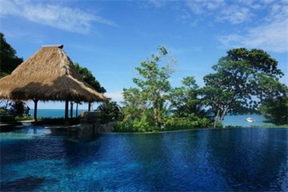
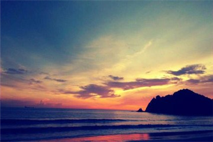
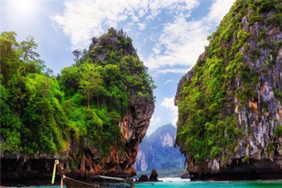

morly旅游圈
甲米的海景正是以其随处可见的石灰石山而著名。甲米府有许多旅游景点，包括了背包客云集的南湾海滩，攀岩天堂莱利海滩，森林公园中的甲米温泉，雨林环绕的翡翠池，历史久远的贝壳公墓，还有包含着天堂岛屿的皮皮岛和兰达岛的国家公园等等。
兰塔岛: 兰达岛是沿着泰国的岛屿，由52个岛屿组成，以海滩和水下的自然美景而闻名， 这里是海滩爱好者和潜水员的天堂，相比热闹的皮皮岛和普吉岛，这里更适合喜欢安静的人。 岛上有蓝塔老镇，非常古老，在岛的最南端是蓝塔群岛国家公园，那里有绝妙的海滩环境，时候游玩。 岛上游客多数以欧美人群为主，只能零星看到几个国人。
莱利海滩: 由三部分海滩构成，面积很小，全部走过不到十分钟，但别有一番滋味。 海滩以攀岩闻名于亚洲，岩壁之下就是沙滩，往上眺望，能看到很多岩洞和正在攀岩们的人群。 由于前往海滩只能乘长尾船前往，因此人不多，海水质量高，海滩上欧美人居多。
甲米镇: ·甲米镇位于甲米河的入海口处，一直以来都只是前往奥南海滩、蓝塔岛及皮皮岛等热门景点的补给站。 ·小镇气氛休闲，安宁而美丽的甲米河穿过小镇，里面还生活着很多的猴子和野生动物。 ·镇上最热闹的要属甲米周末夜市了，海产类既新鲜又便宜，还有一些售卖手工艺品的小贩。
奥南海滩: ·奥南海滩是甲米最热闹也是最有名的海滩，也是甲米的海岸交通中心，旅游者可以从这里租船游览附近的景点。 ·奥南的沙滩不漂亮，但是海水很清澈，适合在这儿游游泳，晒晒日光浴，欣赏日出和日落。 ·到了晚上，临街的露天餐馆提供了非常好的场地，可以在这里喝酒、聊天、观看街头来往的人群。
割喉岛: 割喉岛美丽的海洋景观是割喉岛的特色，丰富的珊瑚礁生态、热带鱼群和海洋生物等等悠游于海洋中，生机盎然的景色是割喉岛最迷人的地方；割喉岛除了海洋生态以外，旅游景点也十分丰富，可以搭乘独木舟前往岩洞参观蝙蝠生态、冰淇淋洞、房洞、007詹姆士庞德岛上的钉子岩、一线天等著名景点，还可以参加浮潜、深潜、海上皮划艇等各式各样水上活动，割喉岛让游客来到泰国甲米旅游享受最具魅力的泰南岛屿风情。
穆兰达国家公园: 穆兰达国家公园位于兰达岛的南部，以海水清澈、野生动物种类丰富而著称。 公园内立有一灯塔，白天黑夜都可以提供不同的壮阔，这里的自然环境得天独厚，每个来这里的人几乎都有看到科摩多巨蜥的运气，行走在公园内，各类小动物不断出现，令人喜爱。
内容整理至网络，如有侵权，请联系我们！1255394075@qq.com
  